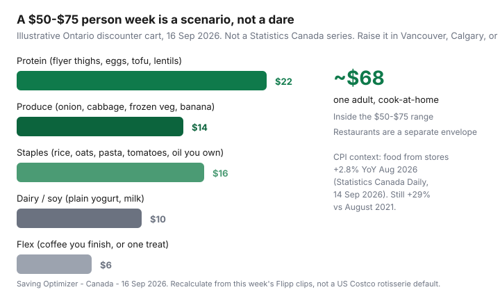

Food & Groceries · Canada
Meal Prep on a Canadian Budget: High-Protein Weeks Without Takeout Creep
Takeout and prepared foods blow Canadian grocery budgets because they masquerade as “I didn’t have time.” The fridge was empty because the flyer protein never got cooked. Generic meal-prep content then ships a Costco rotisserie and seven identical dry breasts — which fails if you do not have a membership, hate that texture by Wednesday, and live next to a No Frills, not a Kirkland aisle.
This is a cook-at-home system built from Canadian loss leaders and discounter lists: a per-person weekly target that fits your city, a flyer-protein matrix, batch-and-freeze portions, equipment that pays for itself, a sample 7-day No Frills / Food Basics plan, emergency meals under $5/serving, and leftover tracking so waste does not refill Uber Eats. It is not medical or sports-nutrition advice. Pair the grams math with cost per gram and the shopping loop with flyer-first meals.
Disclosure: Meal-kit trials, kitchen tools, and grocery gift cards are offer types some households use beside a prep routine. Saving Optimizer may earn a commission if we later add those links. We do not currently claim those partnerships. Nothing here requires a click. Debit at a discounter still works.
Key takeaways
- $50–$75 per person per week is a scenario for one adult cooking from No Frills, FreshCo, Food Basics, Maxi, Super C, or Walmart — not a dare and not a Statistics Canada average.
- Build the week from flyer chicken, pork, tofu, or legumes. Eggs still beat most shakes. Skip un-on-sale breast at $14–$16/kg.
- Cook once, freeze flat portions the same night. Identical dry chicken for seven lunches is how people order pad Thai on Thursday.
- A sheet pan, a pot, a cheap scale, and containers pay for themselves. A $400 gadget stack does not.
- Keep two pantry emergency meals. Restaurants are a separate envelope or the week is fiction.
Set a per-person weekly food target that fits your city
Statistics Canada’s Survey of Household Spending for 2023 (Daily, 21 May 2025) put average spending at $8,659 on food from stores per household — about $722 a month, mixing all household sizes. Canada’s Food Price Report 2026 (Dalhousie et al., 4 Dec 2025) puts a model family of four at up to $17,571.79 for the year. CPI context (Daily, 14 Sep 2026): food from stores +2.8% year over year in August 2026, still +29.0% versus August 2021.
A one-person $300/month playbook is $75/week. That is underneath those averages on purpose. Use ranges, not a viral dare:
| Household | Tight discounter week | When to raise it |
|---|---|---|
| One adult, cooks, has a freezer | $50–$75 | Vancouver / downtown Toronto rents of time, medical diets, heavy training |
| Two adults sharing bulk staples | $90–$140 combined | Two different diets, no shared leftovers |
| Family with lunches packed | See family budgeting — not $75 × headcount | Kids’ sports snacks, northern fly-in prices |
| Student with Food Basics Tuesday 10% | Often the low end of $50–$75 if they cook | Residence meal plan already paid; this is extra |
Health Canada’s food-guide pages on meal planning and grocery shopping on a budget still say the boring things that work: plan before you shop, use a list, cook at home, use leftovers. Canada’s Food Guide is not a price list. Your flyer is. If last month’s store receipts average $110/week, do not crash to $55 in seven days. Cut convenience leaks first.

Flyer-protein matrix (chicken, pork, tofu, legumes)
Thursday: open Flipp, search proteins, pick one animal or plant loss leader plus eggs or lentils as the constant. Cost-per-gram ranks live in the protein guide. This matrix is what you cook.
| If the flyer shows… | Prep it as… | Freeze? |
|---|---|---|
| Chicken thighs / drums | Tray bake with onion and frozen veg; shred for rice bowls and wraps | Yes, flat in bags the same night |
| Pork shoulder or chops on sale | Slow-cook or oven; sauce half so Wednesday is not beige | Yes, in meal portions |
| Tofu (especially ethnic grocers) | Press, roast or fry once; leftover cold in peanut-lime bowls | Cooked cubes freeze; raw tofu is a fridge item |
| Dry lentils / beans | Dal, chilli, or soup; always with a grain and a fat | Cooked portions freeze well |
| Eggs | Frittata squares, hard-cooked for lunches — not 14 fried-egg breakfasts if you will rebel | Cooked frittata yes; raw eggs stay in the carton |
| Chicken breast at $14+/kg | Wait. Thighs or tofu this week | n/a |
| Costco rotisserie | Only if the membership is already paid and you will strip and freeze tonight | Yes — or it is $8 of compost |
Flashfood marked-down meat is allowed if pickup is on the route and you freeze or cook the same day. Surprise bakery bags are not a protein strategy. Flashfood how-to for the fee-versus-drive test.
Batch cook + freeze portion system
The system that beats takeout is not “seven identical glass rectangles.” It is two proteins, two starches, sauce variety, leftover night.
- Shop once. Matches and loyalty on the way out — then go home. Do not “quickly grab” sushi.
- Same night (or next morning if you shop late): cook the grain pot and the protein. Cool quickly; fridge within two hours.
- Portion: some fridge (2–3 days), some freezer flat. Label the day. FIFO — eat older first. Date-label literacy is in food-waste systems.
- Leave one dinner unplanned on purpose (leftovers or the $5 emergency). Full seven-day rigidity is how people quit.
- Thursday: whatever is still frozen gets next week’s lunches or a soup, not a guilt spiral and a SkipTheDishes coupon.
Texture insurance: freeze components (chicken, rice, dal) more than fully assembled bowls if you hate soggy veg. Reheat the protein, add cabbage or a frozen veg steam at the end. Canadian winter produce is allowed to be frozen mixed vegetables. That is not a moral failure.
Equipment that pays for itself (and what doesn’t)
| Usually pays back | Usually does not |
|---|---|
| Sheet pan, 4-litre pot, sharp knife, cutting board | Single-purpose electric gadgets you will store in a hall closet |
| Reusable containers that actually stack in your freezer | A 24-piece matching set that does not fit the fridge door |
| Cheap digital scale (cost per gram, leftover tracking) | A $300 blender for protein smoothies that cost more than eggs |
| Slow cooker or Instant-style cooker if you already would use it twice a week | Air fryer number two, vacuum sealer for a one-person apartment |
| Freezer with space — the real bottleneck | A Costco chest freezer “because meal prep” when you rent a 400-square-foot studio |
If a tool is the only way you will cook thighs on Sunday, it can pay for itself in skipped $18 lunches. If it is a personality, it is household-items spend. Gift cards for grocers belong after the list exists.
Sample 7-day plan with No Frills/Food Basics list
Assumptions, labelled: one adult, Ontario discounter, cook-at-home, illustrative Sep 2026 flyer-style prices — not a receipt. Swap Food Basics if that is your Metro-family store (Moi overlay, Tuesday 10% for students). Quebec: Maxi / Super C. West: FreshCo / Superstore / Save-On as the discounter you actually have.
| Day | Eat | Notes |
|---|---|---|
| Sun | Sheet-pan thighs, onion, frozen mixed veg, rice | Cook extra rice and extra thighs |
| Mon | Thigh rice bowl, cabbage slaw, yogurt sauce | Lunch is Sunday leftover |
| Tue | Lentil dal, rice, frozen spinach | Food Basics Tuesday 10% if you qualify — staples only |
| Wed | Tofu stir-fry, cabbage, leftover rice | Sauce change so it is not “the chicken again” |
| Thu | Frittata squares, toast or oats, fruit | Flyer night: clip next week while this cooks |
| Fri | Frozen thigh portion → tacos or wraps with cabbage | Flex if you have a social meal — budget it separately |
| Sat | Leftover night or $5 emergency (below) | Do not shop hungry “for ideas” |
List to buy (examples): family-pack thighs on flyer, dozen eggs, extra-firm tofu or a bag of dry lentils, cabbage, onions, bananas, frozen veg, plain yogurt, rice if you are out, canned tomatoes, store-brand oats. You should already own oil, salt, one chilli sauce, one curry paste or cumin. Do not buy a new spice rack for one week. Two-store math only if the second stop is documented — banner rotation.
Personal Finance Canada threads on sticking to a ~$300 grocery month are useful because they fail in public: convenience sushi, energy drinks, and skipped prep. This plan is boring on purpose.
Emergency flex meals under $5/serving
The week dies when 6 p.m. Thursday is empty and Skip is one tap. Stock two defaults. Prices are labelled discounter ballparks for Sep 2026 — recalc at the shelf.
- Eggs on rice: two eggs, leftover rice, frozen veg, soy or hot sauce. Often well under $3 if the rice exists.
- Lentil tomato pot: 100 g dry lentils, half a can of tomatoes, onion. Often in the $2–$4 range per serving at store-brand prices.
- Tuna + beans + cabbage: one can tuna, one can beans, shredded cabbage. Watch tuna frequency; rotate with eggs.
- Peanut-lime tofu leftover: cold cubes over cabbage if you prepped Wednesday.
A meal-kit trial is allowed as a named backup for a brutal travel week. Compare the per-serving price to thighs and rice. If the kit is $12/serving, it is takeout with extra cardboard. Do not subscribe because the first box was 50% off.
Takeout creep: one $22 lunch plus a $18 dinner is a third of a $75 week. If you need a restaurant, log it in a restaurant envelope. Calling it “groceries” is how $300 months become fiction.
Tracking leftovers to cut waste
A scale and a notes app beat a complicated macro spreadsheet for budget prep.
- Sunday: photo the fridge. Write three lines that must be eaten by Wednesday.
- When you portion, jot grams or “one box.” You are teaching yourself what a serving looks like, not competing on Instagram.
- Wednesday: anything still unnamed becomes soup, fried rice, or the freezer. Best-before on yogurt is not a poison date; slime is.
- Receipt versus your weekly target the same night. One adjustment. No speech.
Waste is a grocery tax. Surplus apps are planned diversion, not a second personality. If meal prep is how you stay in the $50–$75 band, the flyer OS still comes first: use Flipp on purpose, then cook.
Sources & date stamps
- Statistics Canada Daily, CPI August 2026 (14 Sep 2026); Survey of Household Spending 2023 (Daily, 21 May 2025).
- Canada’s Food Price Report 2026 (Dalhousie University et al., 4 Dec 2025) family-of-four model.
- Health Canada, Canada’s Food Guide — meal planning and grocery shopping on a budget (plan, list, leftovers; not a price index).
- r/PersonalFinanceCanada threads on sticking to a ~$300 grocery budget (2025–2026 community reports — messy, useful, not a survey).
- Wealth North and other Canadian grocery-saving explainers for discounter-first framing; protein cost-per-gram method in our cheap high-protein meals guide.
Frequently asked questions
What is a realistic per-person weekly grocery target in Canada for meal prep?
Treat $50–$75 per person per week as a cook-at-home discounter scenario for one adult, not a national typical. Statistics Canada’s 2023 household spending averaged $8,659 on food from stores per household. Raise the number in high-cost cities, for medical diets, or if restaurants are mixed into the same envelope.
Is Costco rotisserie chicken the cheapest Canadian meal-prep protein?
Sometimes it is convenient if you already pay for a membership and will finish the bird. It is not the default. Flyer chicken thighs, eggs, tofu, and dry lentils at No Frills or Food Basics often win on cost per gram without a $65 Gold Star fee. Run the numbers for your week.
How do I keep high-protein meal prep from turning into takeout by Wednesday?
Cook and freeze portions the same night you shop. Keep two emergency meals under $5/serving in the pantry (eggs and rice, or lentils and tomatoes). Do not meal-prep seven identical dry chicken breasts. Leftover night is a feature.
Are meal kits cheaper than discounter meal prep?
Usually not for a household that already cooks. A trial box can cover a brutal week. Compare the per-serving price to this week’s thighs and rice. Kits are a backup, not an operating system.
Does this work for a family, or only for one person?
The protein matrix and freeze system scale. Per-person dollars fall when a household shares bulk rice and a flyer pack of thighs. Use the family grocery budgeting guide for lunches and a monthly Costco rhythm; keep restaurants in a separate envelope.